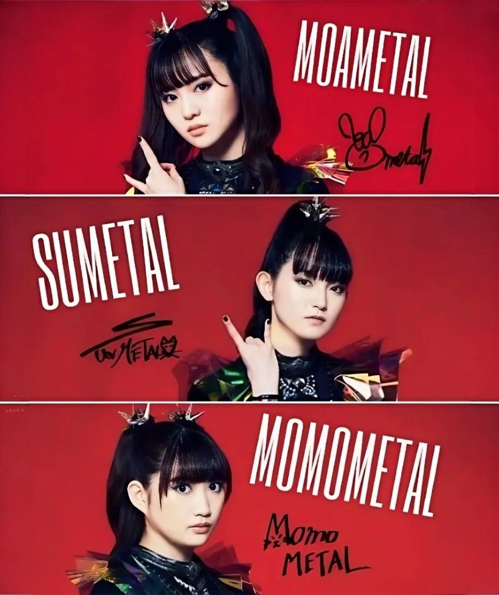
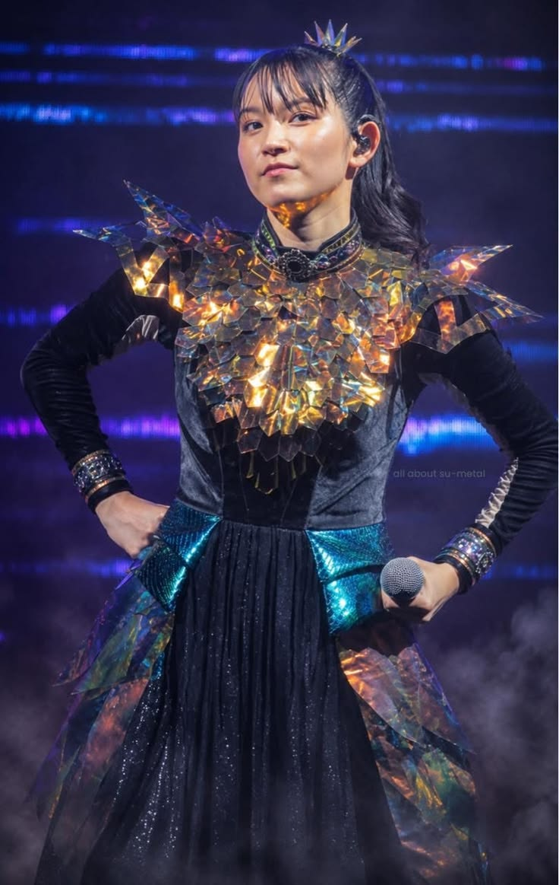
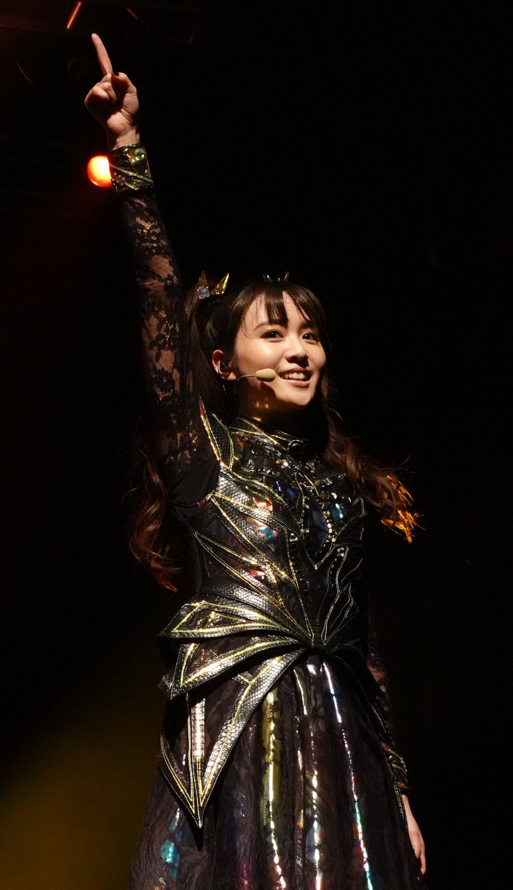
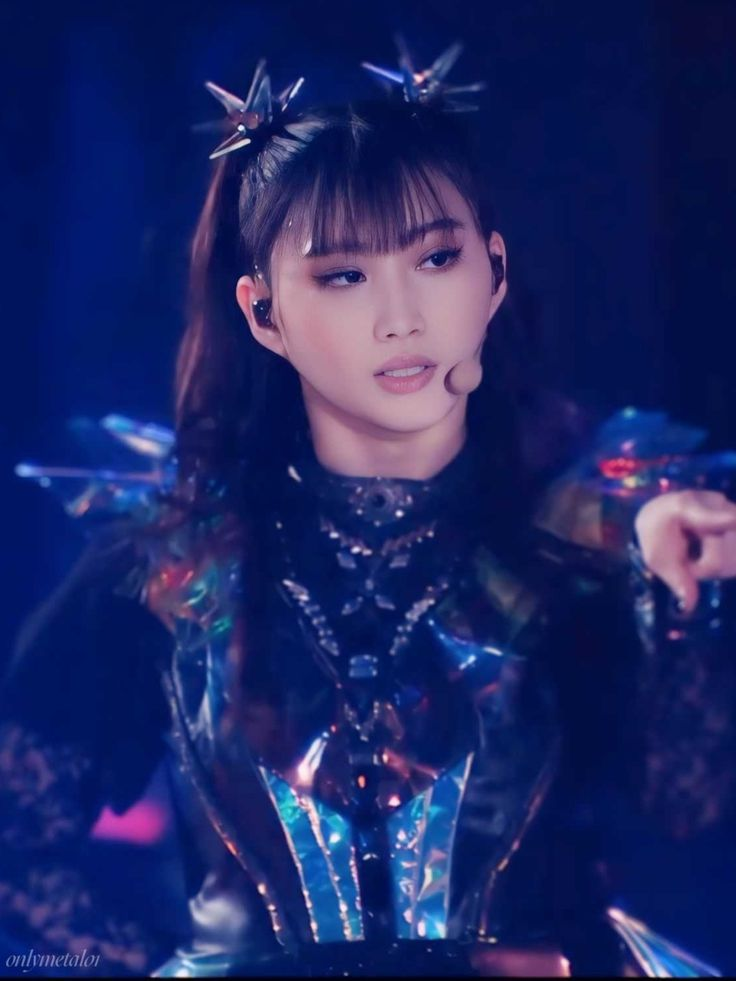
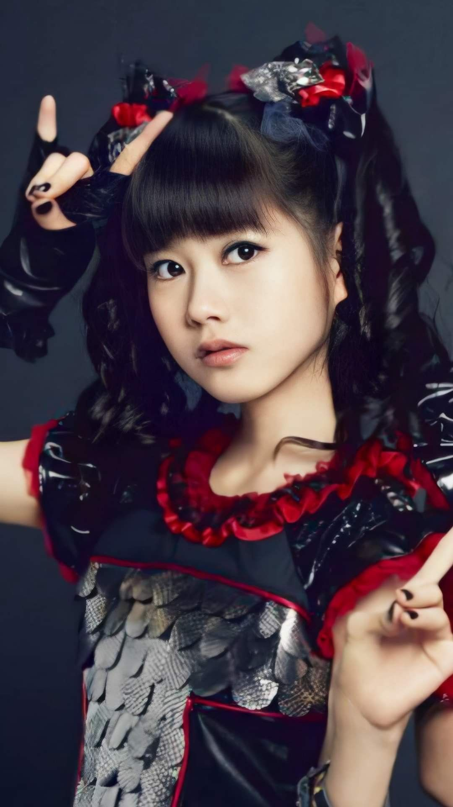

Integrantes

| Nombre artístico | Nombre real | Rol y datos |
|---|---|---|
| SU-METAL | Suzuka Nakamoto | Voz principal y baile. Miembro desde 2010 y líder del grupo. |
| MOAMETAL | Moa Kikuchi | Screams, coros y baile. Miembro desde 2010. |
| MOMOMETAL | Momoko Okazaki | Screams, coros y baile. Miembro oficial desde 2023. |
| Kobametal | Key Kobayashi | Productor y creador del concepto de la banda. |
| Kami Band | — | Banda de músicos en vivo que acompaña al trío. |
SU-METAL

Nombre real: Suzuka Nakamoto
Nacimiento: 20 de diciembre de 1997, prefectura de Hiroshima, Japón
Rol: Voz principal, baile y liderazgo del grupo.
Es la única voz principal de la banda y la responsable de las melodías limpias que contrastan con las guitarras pesadas.
Se formó desde niña en la Actor's School Hiroshima y entró a la agencia Amuse antes de cumplir diez años.
MOAMETAL

Nombre real: Moa Kikuchi
Nacimiento: 4 de julio de 1999, prefectura de Saitama, Japón
Rol: Screams, coros y baile.
Junto a SU-METAL es miembro fundadora del grupo. Entró a Sakura Gakuin en 2010 al mismo tiempo que Yui Mizuno.
En el escenario es la que más interactúa con el público y la encargada de dirigir los coros y los gritos que responden a la voz de SU-METAL.
MOMOMETAL

Nombre real: Momoko Okazaki
Nacimiento: 3 de marzo de 2003, prefectura de Fukuoka, Japón
Rol: Screams, coros y baile.
Es la integrante más joven y la más reciente.
Desde 2019 acompañaba a BABYMETAL como una de las «Avengers», hasta que el 1 de abril de 2023 fue anunciada como tercera integrante oficial.
Integrante anterior y músicos de apoyo

- YUIMETAL: Yui Mizuno, miembro fundadora en 2010. Dejó el grupo en octubre de 2018 por motivos de salud.
- Kami Band: grupo rotativo de músicos de sesión que interpreta las canciones en directo.